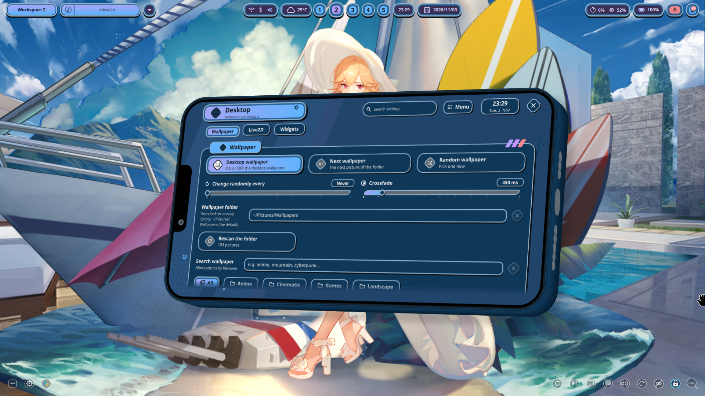
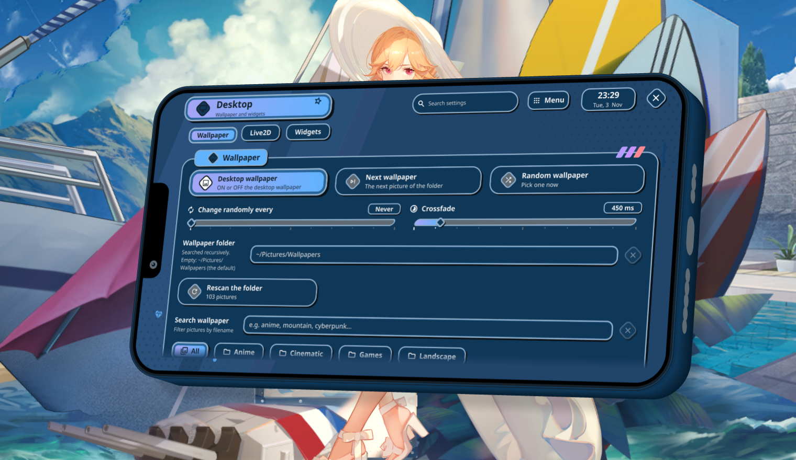

Ultra-low-overhead Live2D Wallpaper Daemon
Runs game-accurate Azur Lane Live2D characters seamlessly on the wlr-layer-shell background.
Engineered with GTK4 WidgetPaintable mirror for < 400MB RAM on dual 144Hz monitors,
instant 0% GPU pause-on-cover, and 100% data-driven interaction parity.
Live Desktop Showcase & Settings
Real-system screenshots captured directly on Arch Linux running Niri Wayland compositor with Richelieu (Fleuron of the Waves) and Quickshell.

Real Desktop Wallpaper (Richelieu)
Live WebGL layer-shell rendering behind desktop status bar, widgets, and windows at 144Hz.

Quickshell Desktop Model Browser & Controls
Integrated settings card with real-time character frame, camera zoom/pan reset, skin search, and dynamic catalog downloader.

Dual-Screen Layout & Dynamic Controls
Independent vs. mirror output mode, placement lock, gaze tracking, and dynamic palette generation with zero restart.
Real Model Interactive Demo (Richelieu)
High-fidelity physics simulation, dynamic gaze following, dialogue synchronization, and touch triggers running with zero hardcoding.
Interaction Triggers
Daemon Simulator Toggles
Live Interaction & IPC Log
Engineering Breakthroughs
Designed from first principles to overcome WebKitGTK and Wayland compositor resource limits.
The Mirror Spike (R2d.2)
WebKitGTK 6.0 lacks shared web-process capabilities, taking ~450MB per monitor. We pioneer Gtk.WidgetPaintable to mirror the primary WebGL canvas onto secondary outputs, dropping RAM from 970MB to 342MB.
Pause on Cover / Idle (R2b.2)
A background watcher monitors niri msg --json event-stream. When all workspaces are occluded by tiled or fullscreen windows, app.ticker.stop() freezes rendering, eliminating GPU heat.
16-Trigger Data-Driven Core
Zero per-skin hardcodes. Implements parameter relations (101-104), listener bands, idle-pose chains, drag gestures, and busy-gate protocols strictly from public drags[] schema.
Hotplug & Dynamic Failover (R2d.3)
Monitors Gdk.Display topology changes. Unplugging HDMI safely detaches paintables; disconnecting the primary laptop screen seamlessly promotes the external display to primary.
Quickstart Runbook
Get up and running in minutes on Arch Linux with Niri or any wlr-layer-shell compositor.
Install Runtime Dependencies
WebKitGTK 6.0 and gtk4-layer-shell are available in official Arch Linux repositories:
sudo pacman -S --needed webkitgtk-6.0 gtk4-layer-shell python-gobject nodejsReal Model Motion & Video Preview (Richelieu)
Real-time physics calculation, smooth eye-gaze tracking, and touch triggers running at 60+ FPS on Wayland:
Start Wallpaper Daemon
Run directly or launch as a user systemd service:
# Direct test run with dual-monitor mirror mode enabled:
python3 wall/mizu-l2d-wall.py
# Or enable auto-start service with your desktop session:
systemctl --user enable --now mizu-l2d-wall.serviceTechnical Documentation & Specifications
Deep-dive specifications, architectural plans, and test methodologies.
OPTIMIZATION-PLAN.md
Complete engineering specification for the Mirror Spike, Niri pause listener, and hotplug management.
PARITY-SPEC.md
Comprehensive interaction parity specifications covering all 16 trigger types and idle state machines.
SPINE-SPIKE.md
Feasibility research spike for Pixi-Spine 3.1.2 runtime integration and 225 Azur Lane Spine skins.
STATUS.md
Living project ledger, benchmark evidence logs, and verification run results.